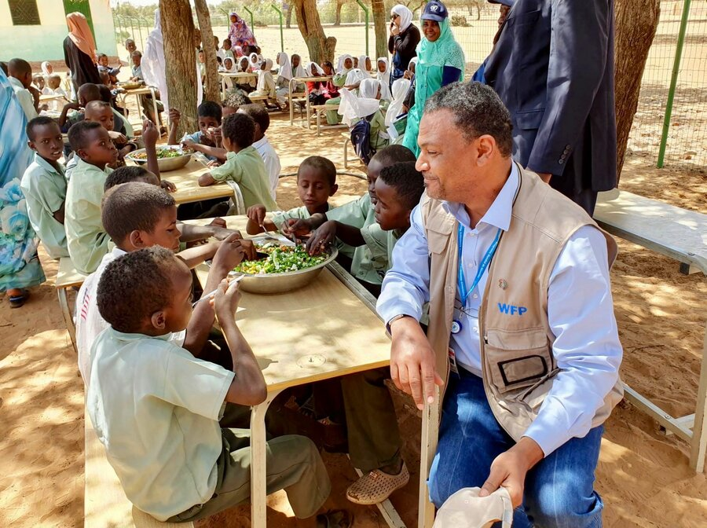
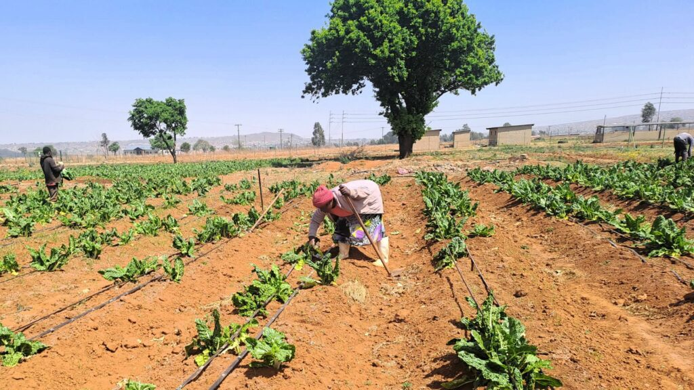
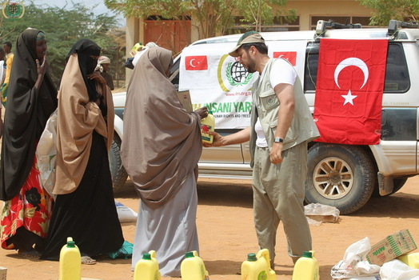

Providing Nutritious Meals to Children in Need
In collaboration with local schools and community centers, we have successfully implemented feeding programs
that provide nutritious meals to children facing hunger. To date, we have served over 2,000,000 meals, ensuring that
vulnerable children have access to the nourishment they need to thrive. These meals have not only alleviated hunger but
also supported children's physical and cognitive development, enabling them to excel in school and beyond.

Sustainable Agriculture Initiatives
Our sustainable agriculture initiatives empowered communities to grow their own food and break the cycle of poverty and
hunger. Through training programs and the provision of resources such as seeds and tools, we have helped 134,000 families establish
thriving gardens and small-scale farms throughout Africa. As a result, families were able to produce their own nutritious food, improving
food security and promoting self-sufficiency.

Emergency Relief Efforts
In times of crisis, such as natural disasters or conflicts, we provided vital emergency relief to affected communities. Our rapid response
teams distributed food aid, clean water, and essential supplies to those in need, offering immediate relief and support during challenging times.
Through our emergency relief efforts, we have assisted 50,256 individuals and 20,000 families, ensuring they have the resources they need to survive
and rebuild their lives.